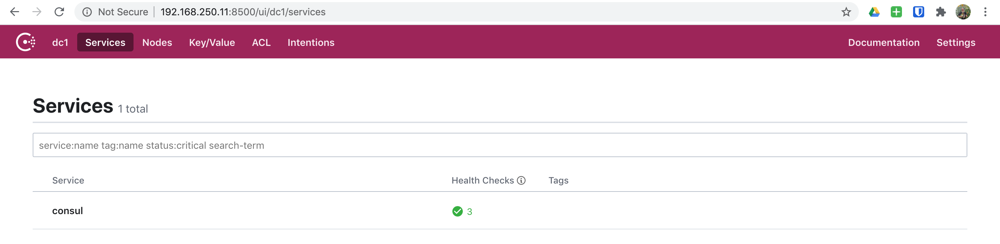
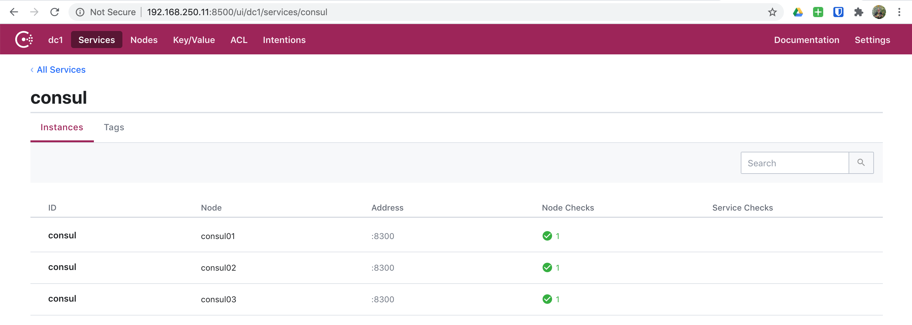
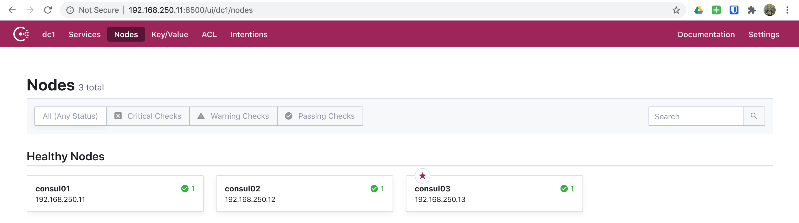

06. Consul - Cluster
In this scenario, we will build upon a single Consul server and move onto setting up a three node Consul cluster.
NOTE: For most of this setup, we will only cover the differences from our single node Consul server. Feel free to jump to 03. Consul to go through anything we covered previously.
Spinning Up
First we need to export our scenario configuration for Vagrant:
export SCENARIO=scenarios/consul_cluster.yml
Now that we've exported our scenario configuration, we are ready to spin up our environment:
vagrant up
And off we go! You will see a lot going on here as Vagrant and Ansible do their job.
▶ vagrant up
Bringing machine 'consul01' up with 'virtualbox' provider...
Bringing machine 'consul02' up with 'virtualbox' provider...
Bringing machine 'consul03' up with 'virtualbox' provider...
...
PLAY RECAP *********************************************************************
consul01 : ok=30 changed=13 unreachable=0 failed=0 skipped=22 rescued=0 ignored=0
consul02 : ok=30 changed=13 unreachable=0 failed=0 skipped=21 rescued=0 ignored=0
consul03 : ok=30 changed=13 unreachable=0 failed=0 skipped=21 rescued=0 ignored=0
And once everything completes, we will have a fully functional three node Consul cluster.
This scenario has the following nodes when completed.
| Node | IP #1 | IP #2 |
|---|---|---|
| consul01 | 192.168.250.11 | |
| consul02 | 192.168.250.12 | |
| consul03 | 192.168.250.13 |
CLI
Now we are ready to begin exploring our Consul cluster using the CLI. So, to do
this. Let's SSH into any one of our nodes consul0[1-3].
vagrant ssh consul01
▶ vagrant ssh consul01
Welcome to Ubuntu 18.04.4 LTS (GNU/Linux 4.15.0-76-generic x86_64)
* Documentation: https://help.ubuntu.com
* Management: https://landscape.canonical.com
* Support: https://ubuntu.com/advantage
Last login: Mon Jul 20 22:37:48 2020 from 192.168.250.1
vagrant@consul01:~$
Now that we've logged in, let's change into the /etc/consul.d directory and
see what files/directories are present.
cd /etc/consul.d
ls -la
vagrant@consul01:~$ cd /etc/consul.d
vagrant@consul01:/etc/consul.d$ ls -la
total 20
drwxr-xr-x 4 root root 4096 Jul 20 22:37 .
drwxr-xr-x 79 root root 4096 Jul 20 22:37 ..
drwxr-xr-x 2 root root 4096 Jul 20 22:37 client
-rw-r--r-- 1 root root 898 Jul 20 22:37 config.json
drwxr-xr-x 2 root root 4096 Jul 20 22:37 scripts
vagrant@consul01:/etc/consul.d$
CLI - Configuration
As we can see from above, our files and directories look identical to our single
node Consul server. However, let's take a look at our config.json file.
cat config.json
vagrant@consul01:/etc/consul.d$ cat config.json
{
"acl": {
"default_policy": "allow",
"down_policy": "extend-cache",
"tokens": {
"agent": "",
"agent_master": "",
"default": "",
"master": "6DA12E0F-D8A5-48C5-AEFF-00D50E84D01A",
"replication": ""
}
},
"bind_addr": "192.168.250.11",
"bootstrap_expect": 3,
"client_addr": "0.0.0.0",
"data_dir": "/var/consul",
"datacenter": "dc1",
"dns_config": {},
"enable_acl_replication": false,
"enable_syslog": true,
"encrypt": "WWw4l0h1LbB4+pC5+VUWiV8kMBNQc+nEwt8OODMx2xg=",
"log_level": "DEBUG",
"node_name": "consul01",
"performance": {},
"primary_datacenter": "dc1",
"retry_join": [
"192.168.250.11",
"192.168.250.12",
"192.168.250.13"
],
"retry_join_wan": [],
"server": true,
"telemetry": {},
"ui": true
}
vagrant@consul01:/etc/consul.d$
This configuration looks very much the same as our single node with the
exception of: bootstrap_expect and retry_join. If you were to compare to
our single node configuration you would see
that these two settings are indeed different. How?
CLI - Nodes
Next, let's get a list of nodes available:
consul catalog nodes
vagrant@consul01:/etc/consul.d$ consul catalog nodes
Node ID Address DC
consul01 b70ec734 192.168.250.11 dc1
consul02 156f0b03 192.168.250.12 dc1
consul03 6040c3c2 192.168.250.13 dc1
vagrant@consul01:/etc/consul.d$
And as we did previously, let's get a more detailed view of our catalog nodes.
consul catalog nodes --detailed
vagrant@consul01:/etc/consul.d$ consul catalog nodes --detailed
Node ID Address DC TaggedAddresses Meta
consul01 b70ec734-8639-0a6b-cc95-8a71b63fb776 192.168.250.11 dc1 lan=192.168.250.11, lan_ipv4=192.168.250.11, wan=192.168.250.11, wan_ipv4=192.168.250.11 consul-network-segment=
consul02 156f0b03-33db-7dfc-bb5b-3c682e51a815 192.168.250.12 dc1 lan=192.168.250.12, lan_ipv4=192.168.250.12, wan=192.168.250.12, wan_ipv4=192.168.250.12 consul-network-segment=
consul03 6040c3c2-b2f8-c17e-ca75-873e83cb6455 192.168.250.13 dc1 lan=192.168.250.13, lan_ipv4=192.168.250.13, wan=192.168.250.13, wan_ipv4=192.168.250.13 consul-network-segment=
vagrant@consul01:/etc/consul.d$
Let's also use curl to get a detailed view here as well.
curl --silent http://127.0.0.1:8500/v1/catalog/nodes | jq
vagrant@consul01:/etc/consul.d$ curl --silent http://127.0.0.1:8500/v1/catalog/nodes | jq
[
{
"ID": "b70ec734-8639-0a6b-cc95-8a71b63fb776",
"Node": "consul01",
"Address": "192.168.250.11",
"Datacenter": "dc1",
"TaggedAddresses": {
"lan": "192.168.250.11",
"lan_ipv4": "192.168.250.11",
"wan": "192.168.250.11",
"wan_ipv4": "192.168.250.11"
},
"Meta": {
"consul-network-segment": ""
},
"CreateIndex": 7,
"ModifyIndex": 9
},
{
"ID": "156f0b03-33db-7dfc-bb5b-3c682e51a815",
"Node": "consul02",
"Address": "192.168.250.12",
"Datacenter": "dc1",
"TaggedAddresses": {
"lan": "192.168.250.12",
"lan_ipv4": "192.168.250.12",
"wan": "192.168.250.12",
"wan_ipv4": "192.168.250.12"
},
"Meta": {
"consul-network-segment": ""
},
"CreateIndex": 5,
"ModifyIndex": 8
},
{
"ID": "6040c3c2-b2f8-c17e-ca75-873e83cb6455",
"Node": "consul03",
"Address": "192.168.250.13",
"Datacenter": "dc1",
"TaggedAddresses": {
"lan": "192.168.250.13",
"lan_ipv4": "192.168.250.13",
"wan": "192.168.250.13",
"wan_ipv4": "192.168.250.13"
},
"Meta": {
"consul-network-segment": ""
},
"CreateIndex": 6,
"ModifyIndex": 10
}
]
vagrant@consul01:/etc/consul.d$
CLI - Datacenter Members
To get a list of Consul datacenter members, we can simply execute:
consul members list
vagrant@consul01:/etc/consul.d$ consul members list
Node Address Status Type Build Protocol DC Segment
consul01 192.168.250.11:8301 alive server 1.7.2 2 dc1 <all>
consul02 192.168.250.12:8301 alive server 1.7.2 2 dc1 <all>
consul03 192.168.250.13:8301 alive server 1.7.2 2 dc1 <all>
vagrant@consul01:/etc/consul.d$
UI - Services
Click on services and you'll see we only have one service currently in Consul, which will look like below.

And if you click on the Consul service to dig in further, you'll see a bit
of information on our Consul service.

UI - Nodes
Next, let's click on nodes and we SHOULD now see our three nodes.

NOTE: At this point everything else SHOULD work the exact same as it did with our single node Consul server. And as mentioned previously, feel free to explore those different things we did in 03. Consul.
Tearing Down
After you've explored a Consul cluster setup. You'll likely be ready to move onto more advanced scenarios. So, just as we did when spinning up. We can quickly tear everything down.
./scripts/cleanup.sh
▶ ./scripts/cleanup.sh
==> consul03: Forcing shutdown of VM...
==> consul03: Destroying VM and associated drives...
==> consul02: Forcing shutdown of VM...
==> consul02: Destroying VM and associated drives...
==> consul01: Forcing shutdown of VM...
==> consul01: Destroying VM and associated drives...
(venv)